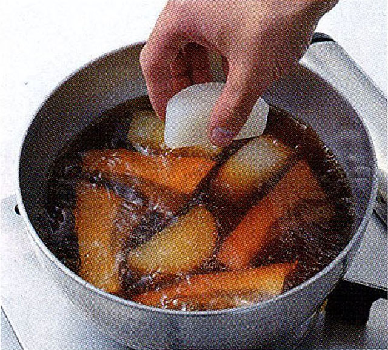

ブリ ダイコン
材料（４人分）- ブリ ４切れ（300g）
- 大根 1／５本（250g）
- シュンギク（ゆでる） ５本（150g）
- A しょうゆ 大さじ1 1／３
- みりん 大さじ２
- 酒 大さじ2
- 砂糖 大さじ1
- だし汁 240ml
- 水 240ml
- しょうゆ 大さじ１
- 米のとぎ汁 適量
霜降りする
ブリは食べやすい大きさに切る。鍋に湯を沸かしてブリを入れ、全体が白くなったら冷水にとり、汚れを落として水気を拭く。ダイコンをゆでる
ダイコンは厚めの輪切りにして皮を剥き、半分に切って面取りする。鍋にダイコンとかぶるくらいの米のとぎ汁を入れ、竹串がスッと通るまで8～10分ゆでて、ざるに上げる。

煮る
鍋にAとブリを入れ、中火にかける。煮立ったらあくを取り、ダイコンを加える。落としぶたをして煮汁が半分になるくらいまで煮る。仕上げる
落としぶたを捨てしょうゆを加え、煮汁が３分の1程度になり、泡が大きくなるまで煮る。器に盛り、食べやすく切ったシュンギクを添える。
落としぶたをして煮ると、味がよくなじみます
落としぶたをすると煮汁が少なくても全体に回り、味がきちんとつきます。写真のようにクッキングシートを切って使うと手軽です。
バランスのよい献立
しっかりと味のしみた煮物には、まろやかな白和えや甘みのある煮豆を添えると、おいしく食べられます。副菜2品を添えるので、汁物はシンプルに。